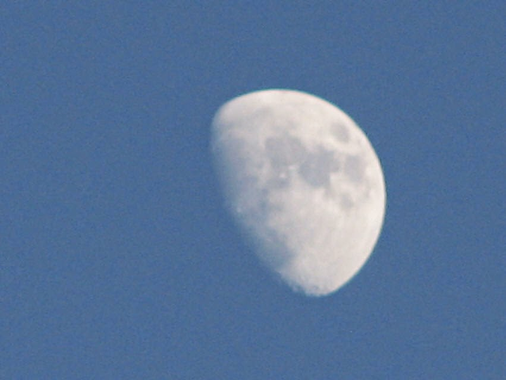
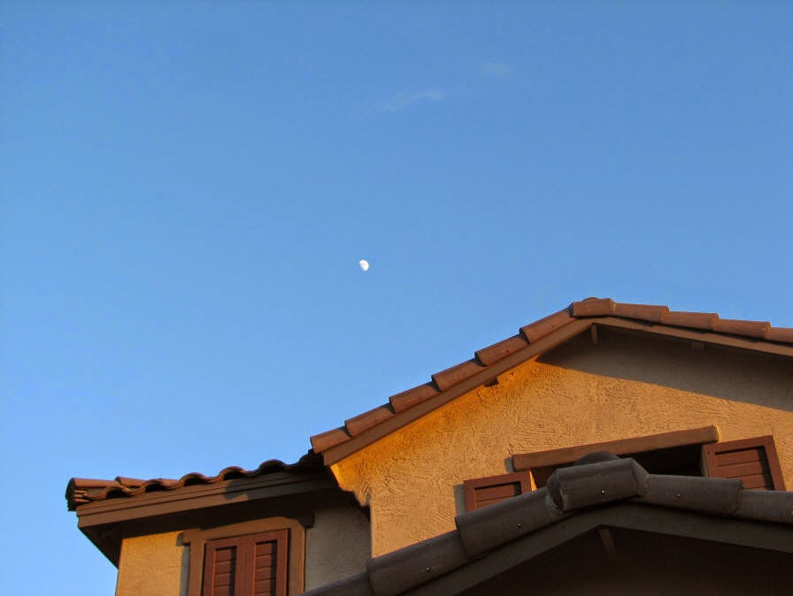

Recovered weblog entry
Birth of the Moblah'g
Monday evening, and a wonderful dip in the pool. While we were swimming around, Sumner asked me one of those questions only children can ask.
"Why are the clouds orange, daddy?"
Funny how such a simple question can have such a complex answer to a child. The sun reflects its light against the clouds in the evening.
"But, the sun is yellow", he stated matter of factly.
I then tried explaining that just as he sees himself in the mirror, the suns sees itself in the clouds. That brought a smile to his face, and he resumed swimming. Coincidentally, Sumner is an awesome swimmer, even better than he was last summer. In previous years, he faced the pool and water with reckless abandon; he feared nothing about the entire event. Seeing how he is more fully self-aware, I feared this summer would bring trepidation in full swing.
But after two weeks of prescribed swimming lessons, the boy is nearly swimming the width of the pool. Any pool in fact, just as long as there is water enough to jump in. He lasts much longer than his parents, too...he doesn't know when to quit yet.
I'm pretty stoked to announce a new addition to Outside the World: The Moblah'g! Go check it out, and come right back. Don't worry, I'll wait right here.
Back? Good. So the proper term is "MoBlog" (as in mobile blog), but I much prefer the Moblah'g. I know it's been done thousands of times before by hundreds of thousands of people, but it's fun and why not, eh? With this new blog, the site will be granted daily updates. Everything comes straight from my smart phone, right as it happens. It's my own little version of buzz.mn.
I love the freedom that it gives me. No longer is my mind tethered by my keyboard and mouse; I can post a picture and thoughts from anywhere I wish now. Jeez, now that I think about it, this could be dangerous. Well, with great power comes great responsibility, as one arachnid's uncle once said. I'll do my best to entertain.
So, on the weekends, check the main blog site for updates. Any other day, head on over to the Moblah'g. I'll be much appreciative of the effort!
As my brother pointed out, it is quite sad that I only know a song by "The Who" because I heard the reference on an episode of "The Simpsons". Well, it is what it is, as Rocky once said.
From the episode, "A Tale of Two Springfields":
The various Who songs mentioned or played during this episode are: "My Generation", "Won't Get Fooled Again", "Squeeze Box" -Mentioned by Homer in the hotel.
"Won't Get Fooled Again" was played later, as the group "broke" the wall.
"The Seeker" - Played at the start of the concert.
"Magic Bus", "Pinball Wizard" - Requested by Homer.
It was "Won't Get Fooled Again".
So, enjoy the new entries, and by all means, comment as you wish! The only way I know that people are visiting this humble little blog is because of the commentary. Plug away! I leave you with the moon.


PS. Yes, this entry was all over the place. I was just excited to get the updates done. Forgiveness please!